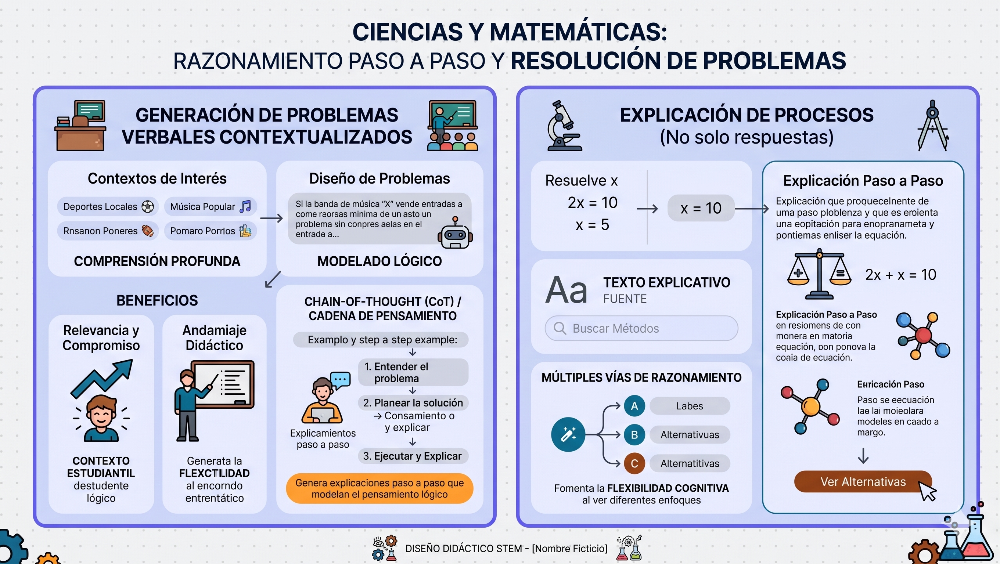
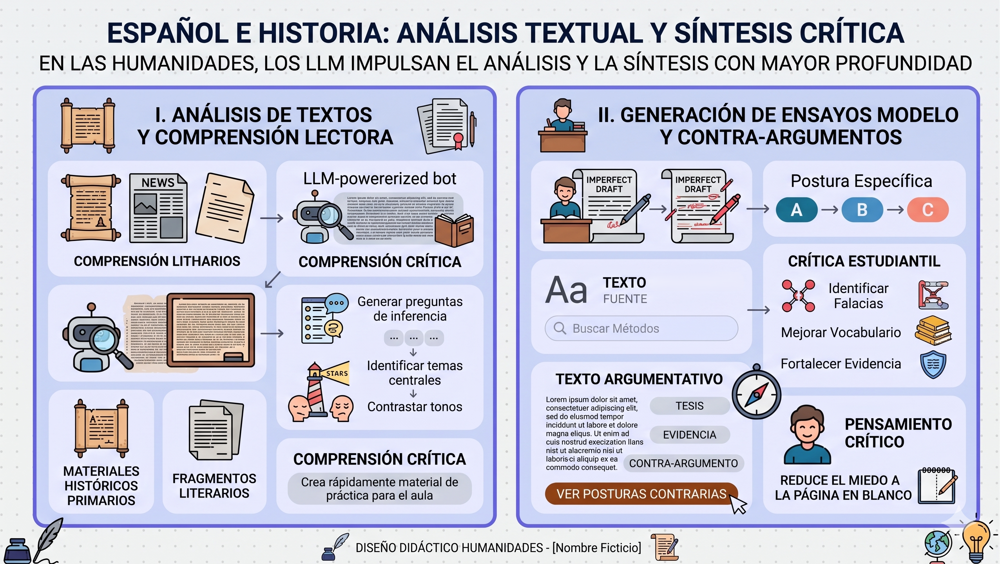
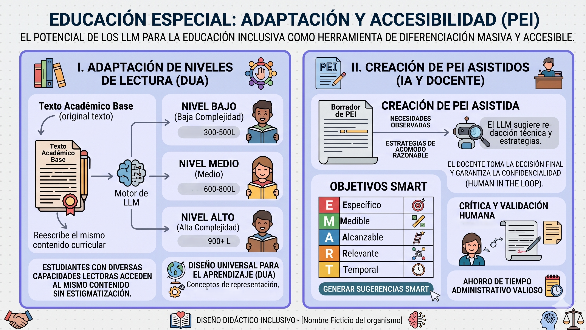

Lección 1.2: Aplicaciones estratégicas por áreas de contenido
La integración de los modelos de lenguaje de gran tamaño (LLM) no ocurre de la misma manera en todas las disciplinas. Cada área académica presenta desafíos cognitivos particulares que los LLM pueden abordar mediante estrategias de reasoning (razonamiento), generación de texto y adaptación de contenidos. A continuación, se detallan oportunidades de uso específicas validadas por la investigación reciente.
Ciencias y Matemáticas: razonamiento paso a paso y resolución de problemas

En disciplinas STEM (Ciencia, Tecnología, Ingeniería y Matemáticas), el principal valor de los LLM reside en su capacidad para desglosar problemas complejos en pasos lógicos manejables.
• Generación de problemas verbales contextualizados: Los docentes pueden solicitar a un bot o aplicación basada en LLM que diseñe problemas matemáticos situados en contextos de interés para sus estudiantes (ej. deportes locales, música popular), lo que aumenta la relevancia y el compromiso. La literatura sobre Chain-of-Thought (CoT) o "cadena de pensamiento" demuestra que cuando se pide al modelo que genere explicaciones paso a paso, no solo mejora la precisión de la respuesta, sino que proporciona un andamiaje didáctico que el maestro puede usar para modelar el pensamiento lógico en clase (Zhang et al., 2024; Yao et al., 2023).
• Explicación de procesos: En lugar de simplemente dar una respuesta numérica, herramientas como ChatGPT pueden generar explicaciones detalladas de por qué ocurre un fenómeno científico o cómo se llega a una solución matemática. Investigaciones recientes sugieren que el uso de LLM para generar múltiples vías de razonamiento permite a los estudiantes ver diferentes enfoques para un mismo problema, fomentando la flexibilidad cognitiva (Yao et al., 2023; Wei et al., 2022).
Español e Historia: análisis textual y síntesis crítica

En las humanidades, los LLM funcionan como motores de lenguaje que impulsan bots y asistentes de lectura y escritura avanzada, permitiendo trabajar competencias de análisis y síntesis con mayor profundidad.
• Análisis de textos y comprensión lectora: Los docentes pueden ingresar textos complejos (ej. documentos históricos primarios o fragmentos literarios) y pedir a una aplicación basada en LLM que genere preguntas de inferencia, identifique temas centrales o contraste el tono con otro documento. Esto apoya la creación rápida de material de práctica para comprensión crítica (Damiano et al., 2024).
• Generación de ensayos modelo y contra-argumentos: Para enseñar escritura argumentativa, el docente puede pedir a un bot conversacional que redacte un ensayo con una postura específica y luego trabajar con los estudiantes para criticar ese texto: identificar falacias, mejorar el vocabulario o fortalecer la evidencia. Este uso de la IA como "borrador imperfecto" promueve el pensamiento crítico y reduce el miedo a la página en blanco (Valli & Zafiropoulos, 2024).
Educación Especial: adaptación y accesibilidad (PEI)

El potencial de la diferenciación masiva
El potencial de los LLM para la educación inclusiva es una de sus aplicaciones más prometedoras, actuando como una herramienta de diferenciación masiva y accesible.
- 🎨 Adaptación de niveles de lectura (DUA): Un LLM puede reescribir un mismo texto académico en múltiples niveles de complejidad (ej. nivel Lexile bajo, medio y alto) en segundos, permitiendo que estudiantes con diversas capacidades lectoras accedan al mismo contenido curricular sin estigmatización. Esta capacidad de personalización apoya directamente las estrategias de Diseño Universal para el Aprendizaje (DUA) (Sarkar et al., 2024).
- 🎯 Creación de PEI asistidos (Objetivos SMART): En la redacción de Programas Educativos Individualizados (PEI), los asistentes basados en LLM pueden ayudar a los maestros a redactar objetivos SMART (Específicos, Medibles, Alcanzables, Relevantes y Temporales) basados en las necesidades observadas del estudiante. Aunque la decisión final siempre depende del humano (human in the loop), la IA puede sugerir estrategias de acomodo razonable y redacción técnica que ahorran tiempo administrativo valioso (Dahri et al., 2025; Sarkar et al., 2024).
¡Felicidades!
Has culminado la lección 1.2 del programa de formación profesional.
Al completar este contenido, has dado un paso importante hacia una integración más estratégica de los LLM en tu práctica: ahora reconoces que cada área (STEM, humanidades y educación especial) plantea oportunidades y cuidados distintos. Este mapa de aplicaciones te permitirá decidir con mayor intención donde la IA aporta valor real al aprendizaje.
🎉 Checkpoint de Saberes
Para cerrar este bloque, te invito a realizar esta evaluación formativa breve sobre las aplicaciones de los LLM en tu área de enseñanza.
Referencias de la Lección
- • Dahri, N. A., et al. (2025). Ethical Governance of Artificial Intelligence Hallucinations in Legal Practice.
- • Damiano, R. F., et al. (2024). Early perceptions of teaching and learning using generative AI in higher education.
- • Sarkar, P., et al. (2024). Step-Aware Policy Optimization for Reasoning in Diffusion Large Language Models.
- • Valli, P., & Zafiropoulos, K. (2024). Factors that affect the acceptance of educational AI tools by teachers.
- • Wei, J., et al. (2022). Chain-of-thought prompting elicits reasoning in large language models.
- • Yao, S., et al. (2023). Tree of Thoughts: Deliberate Problem Solving with Large Language Models.
- • Zhang, H., et al. (2024). Step-By-Step Coding for Improving Mathematical Olympiad Performance.